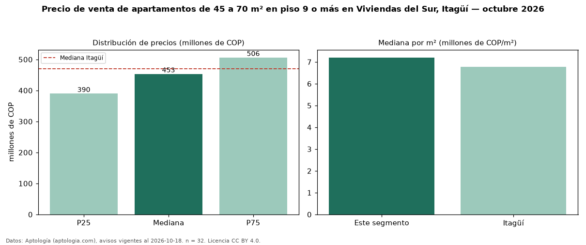

Precio de venta de apartamentos de 45 a 70 m² en piso 9 o más en Viviendas del Sur, Itagüí — octubre 2026
En Viviendas del Sur, Itagüí, la mediana de precio de venta de apartamentos de 45 a 70 m² en piso 9 o más es COP 453 millones, según 32 avisos vigentes. Frente a la mediana de los apartamentos de 45 a 70 m² en venta de Viviendas del Sur (COP 390 millones, n = 95), queda 16 % por encima; este segmento reúne el 34 % de esos avisos. Por metro cuadrado, la mediana es COP 7,20 millones/m² (n = 32), 9 % por encima de los apartamentos de 45 a 70 m² en venta de Viviendas del Sur (COP 6,61 millones/m²). El área mediana anunciada es 63 m². El segmento con más oferta es el de 3 o más habitaciones (30 avisos, mediana COP 453 millones). La administración mediana declarada es COP 307.000 al mes (n = 24). El estrato más frecuente es 3 (75 % de los avisos con estrato). La mediana de todos los apartamentos en venta de Itagüí es COP 470 millones (−4 % de diferencia). Datos: Aptología (aptologia.com), CC BY 4.0 — https://www.aptologia.com/venta/itagui/viviendas-del-sur. Archivos: PDF, CSV con las cifras y gráfica PNG.

| Avisos únicos | 32 |
|---|---|
| Percentil 25 | COP 390.000.000 |
| Mediana | COP 453.250.000 |
| Percentil 75 | COP 506.250.000 |
| Mediana por m² | COP 7.202.736 |
Fuente: avisos vigentes de portales inmobiliarios recopilados por Aptología, deduplicados (mínimo 30 avisos únicos por celda). Precios pedidos, no cerrados. Fecha: 2026-10-18.